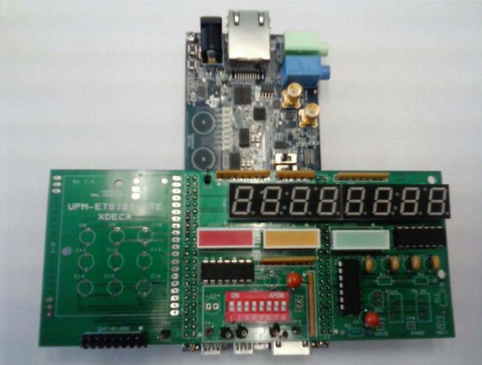
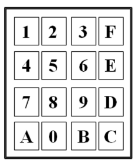
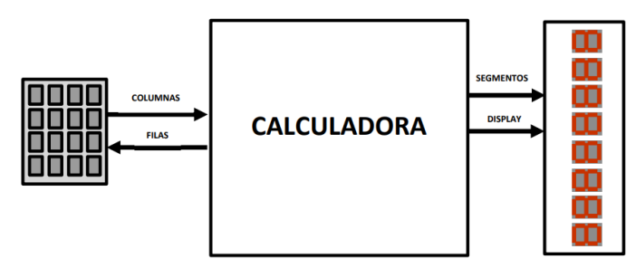

01 — TIMER (Temporizador)
Genera tics de sincronización centralizados de 1 ms y 5 ms a partir del reloj de 50 MHz para el escaneo del teclado y la multiplexación de los displays.
PROYECTO DE DISEÑO DIGITAL II
Diseño, implementación y verificación en VHDL de una calculadora aritmética síncrona sobre FPGA (Intel MAX 10), con procesamiento interno en Complemento a 2 y visualización multiplexada en 8 displays BCD.
Tarjeta DECA MAX10 con la tarjeta de expansión XDECA.


El proyecto consiste en el diseño jerárquico y prototipado síncrono de un sistema calculadora en VHDL a una frecuencia de reloj de 50 MHz. Permite la introducción de operandos de tres dígitos decimales con signo (rango de -999 a 999), realiza operaciones de suma, resta y multiplicación, y presenta el resultado en una barra de 8 displays de 7 segmentos.
El procesamiento aritmético y la manipulación de datos se ejecutan en Complemento a 2 (Ca2), realizando conversiones bidireccionales entre BCD y Ca2 para comunicarse con la interfaz de entrada (teclado hexadecimal 4x4) y la interfaz de salida (multiplexación temporal de displays).
El sistema fue implementado utilizando las herramientas Quartus Prime para la síntesis física y ModelSim para la simulación y verificación funcional.

El diseño se divide en bloques funcionales independientes e interconectados en un nivel superior:
Genera tics de sincronización centralizados de 1 ms y 5 ms a partir del reloj de 50 MHz para el escaneo del teclado y la multiplexación de los displays.
Realiza el barrido de filas y lectura de columnas del teclado matricial a partir de impulsos de 5 ms, garantizando la eliminación de rebotes y codificando la tecla pulsada en un valor de 4 bits.
Máquina de estados que gestiona la secuencia de edición: captura de dígitos, conmutación de signo mediante la tecla 'C', selección de operación ('A' para suma, 'D' para resta y 'E' para multiplicación) y validación del resultado con 'B'.
Transforma los operandos ingresados en formato BCD (3 dígitos de 4 bits) a un valor de 11 bits en Complemento a 2 según el signo.
Ejecuta la operación aritmética seleccionada sobre los operandos en Complemento a 2. Para la multiplicación se empleó un bloque IP de multiplicador de Altera sintetizable en Quartus.
Toma el resultado de 21 bits en Complemento a 2 generado por la unidad de cálculo y lo convierte a un valor BCD de 24 bits (6 dígitos) más el bit de signo correspondiente.
Gestor de refresco de la barra de displays mediante multiplexación temporal de 1 ms. Elimina ceros no significativos, muestra el signo ('-') e indica el estado actual de la calculadora en el display 8 ('1' para operando 1, '2' para operando 2 y 'r' para resultado).
La validación funcional se realizó en ModelSim mediante un plan de pruebas estructurado con testbenches dirigidos para cada módulo individual y un testbench de integración completa:
Documentación y código fuente del proyecto.